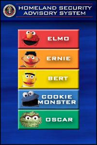

hello world. this is my website. my name is benjamin morren. i made this to keep my followers updated on cult community events i'm hosting.
in the future i will be listing core values to live by, as well as a detailed instruction manual on how to become a member of the society.
music goes far beyond creating sounds and perceiving them. there's a spiritual connection we will be exploring through rituals and mantras.
hanks fest 2026.
